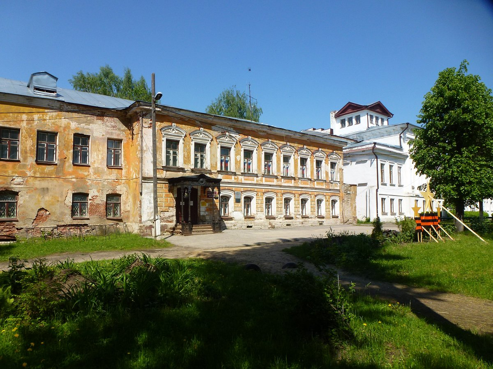
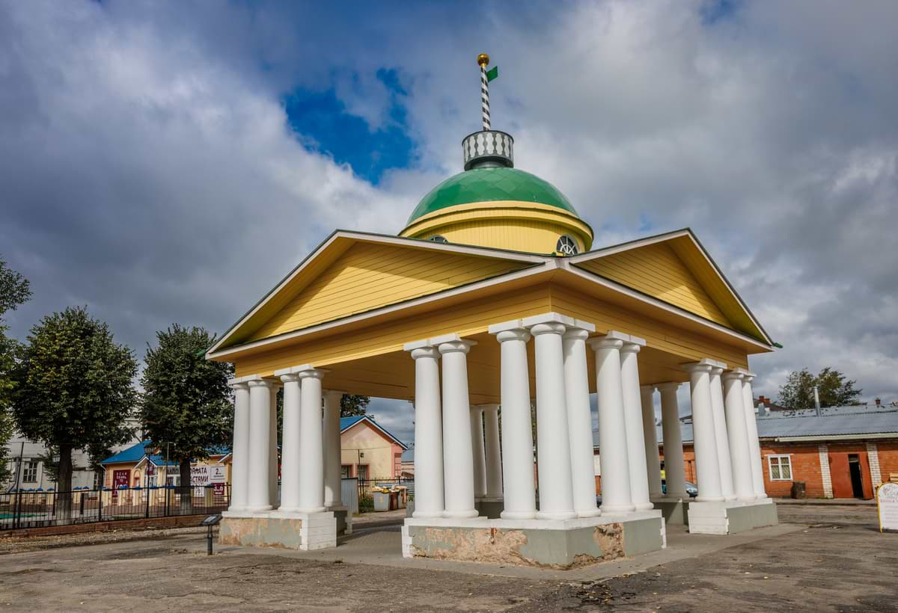

Шуя
Город знаменит своей ткацкой промышленностью и знаменитыми на весь мир шуйскими ситцами. Развитию промышленности и торговли в Шуе способствовало удобное положение города на судоходной реке Тезе. В Шуе имеется большой Гостиный двор. Торговать в Шую приезжали иногородние и иностранные купцы — в 1654 году в гостином дворе была лавка английско-архангельской торговой компании. В это же время Шуя прославилась и своими торговыми ткацкими ярмарками.

Здание расположено на площади Ленина (бывшей Спасской) и входит в состав богатой усадьбы, принадлежавшей семье богатых купцов Посылиных – владельцев миткалевой и двух ситценабивных фабрик. Наряду с другими она формирует северную линию застройки площади. Постройки датируются рубежом XVIII-XIX веков. В 1837 году, во время своего пребывания в Шуе, дом посетили будущий царь Александр II и сопровождавший его русский поэт В.А. Жуковский.

Шуйская важня, построенная в 1820-м году, – единственная во всей центральной России. Хотя в прежние времена возовые весы были непременным атрибутом каждой крупной рыночной площади, до наших сохранился только один павильон. Весы были сердцем города как в переносном, так и в буквальном смысле – от них начинался отсчет всех дорог. Поэтому на флагштоке павильона, как на верстовом столбе, чередуются черные и белые полоски.
